Girls grow up being told they are pretty. The problem isn't the word. It's that it's the whole sentence.
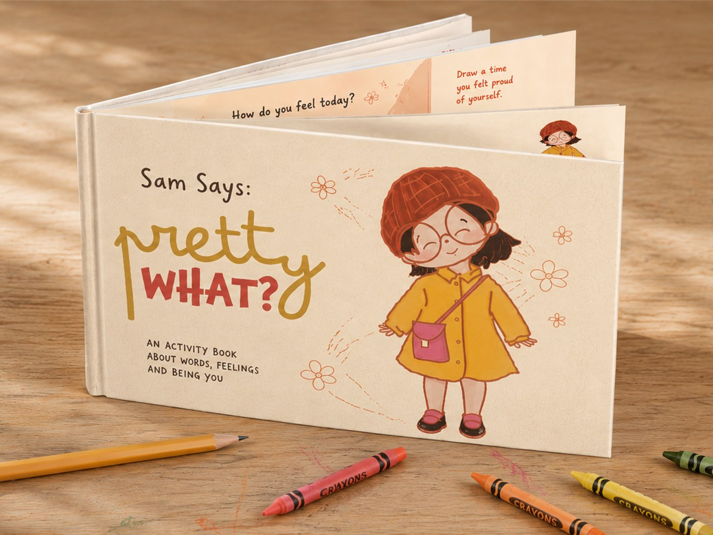
Girls are told they are pretty early, and often.
By family, by strangers, by the media they consume, before they have the language to question it. Over years of exposure, the result is a narrowing: the sense that looking pleasing is the most important thing you can be.
This project addresses the sexualisation of the school-girl image in media, and its effects on pre and early teen girls aged 9 to 15. The challenge was an awareness campaign that could reach this age group and their caregivers in a way that felt safe and empowering, not preachy or frightening.
It had to work across schools, NGOs and social media, without a formal facilitator to deliver it.
Sexualisation is so embedded in our media that many times, we may not even recognise it when it comes in front of us. A teenager or young adult is dressed in a way to make her appear younger. She may be wearing a cheerleader uniform, a school-girl uniform, and she is often posed in a sexual fashion.
Portrayal of underage girls in media, from the research.
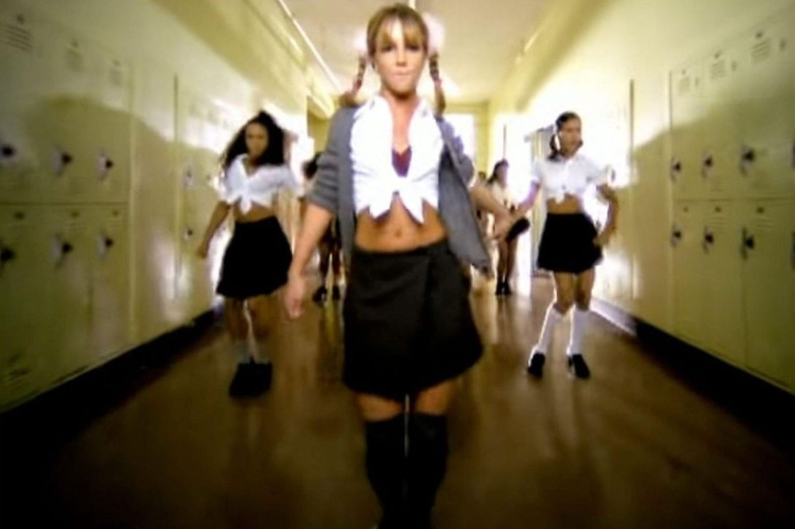
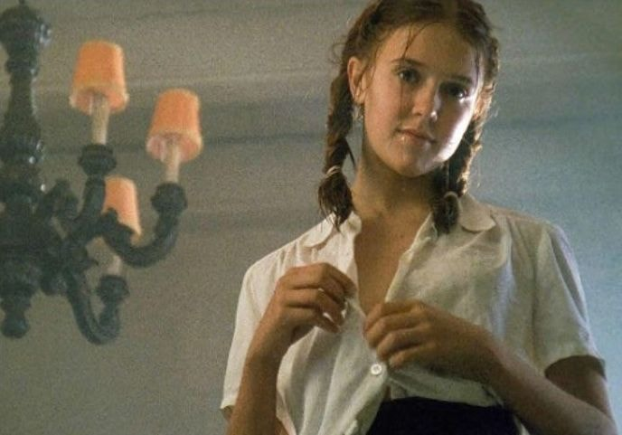
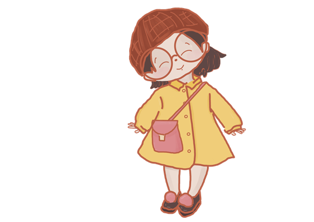
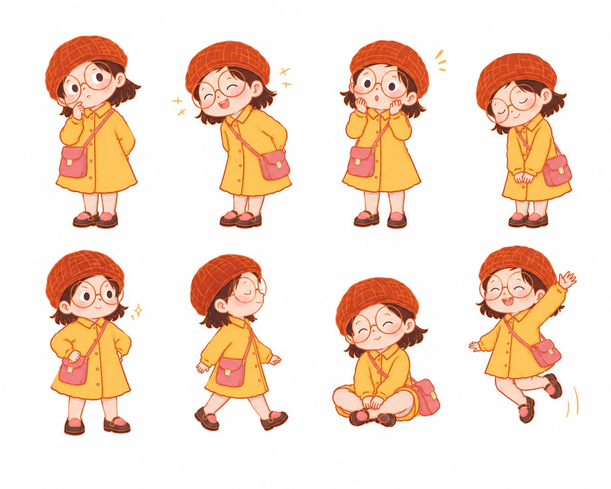
Sam is 12. Her favourite colour is yellow. Every time someone calls her pretty, she asks: Pretty, what?
Sam is the campaign mascot: a curious girl who enjoys learning about new things, wears round golden-rimmed glasses and the weirdest clothes, and is very friendly and chatty.
Not aspirational in the conventional sense. Achievable. Already enough.
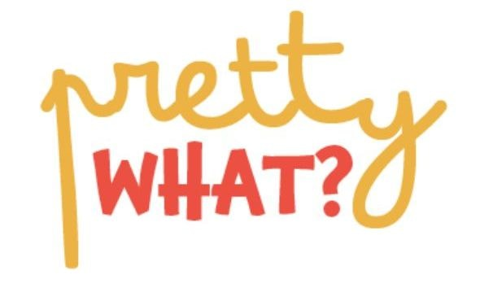
Palette.
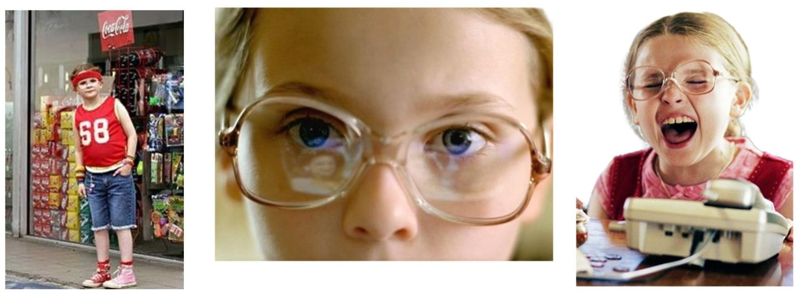
Major inspiration.
Sam is modelled in part on Olive from Little Miss Sunshine, a child who exists fully in her own world, with no interest in being anyone else's idea of pretty. Her family spends the film arguing about whether she belongs in a beauty pageant. Her mother settles it: you've got to let Olive be Olive.
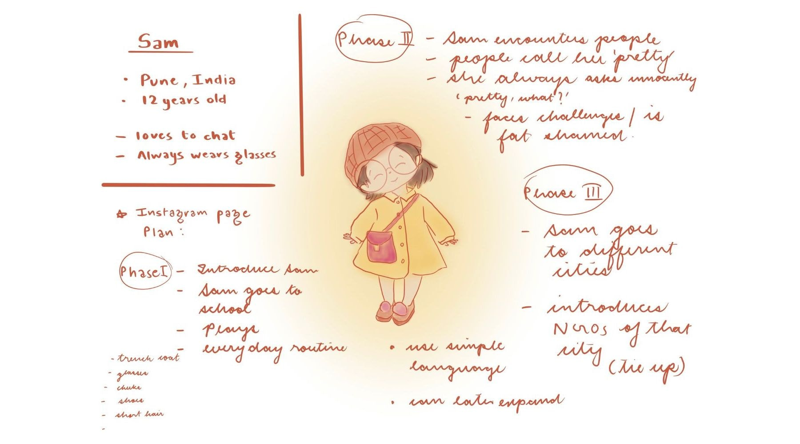
A book a ten-year-old would actually want to pick up.
Sam Says: Pretty What? is a colouring and activity book built around one question, asked a dozen different ways. Sam is pretty brave. Sam is pretty kind. Sam is pretty curious. Pretty, what, is left for the reader to decide about themselves.
Colouring pages show Sam being curious, messy, clever and ridiculous, never decorative. Activity pages build vocabulary around identity and self-worth in language that feels playful rather than instructional.
The goal: a girl who picks it up because it looks fun, and puts it down knowing something she didn't before.
Sam, out in the world.
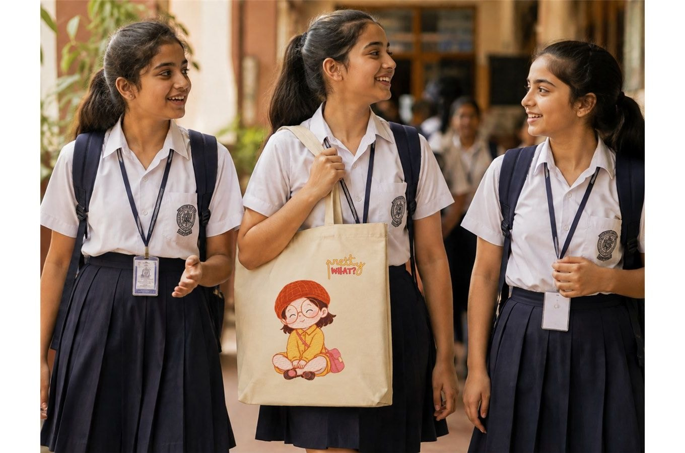
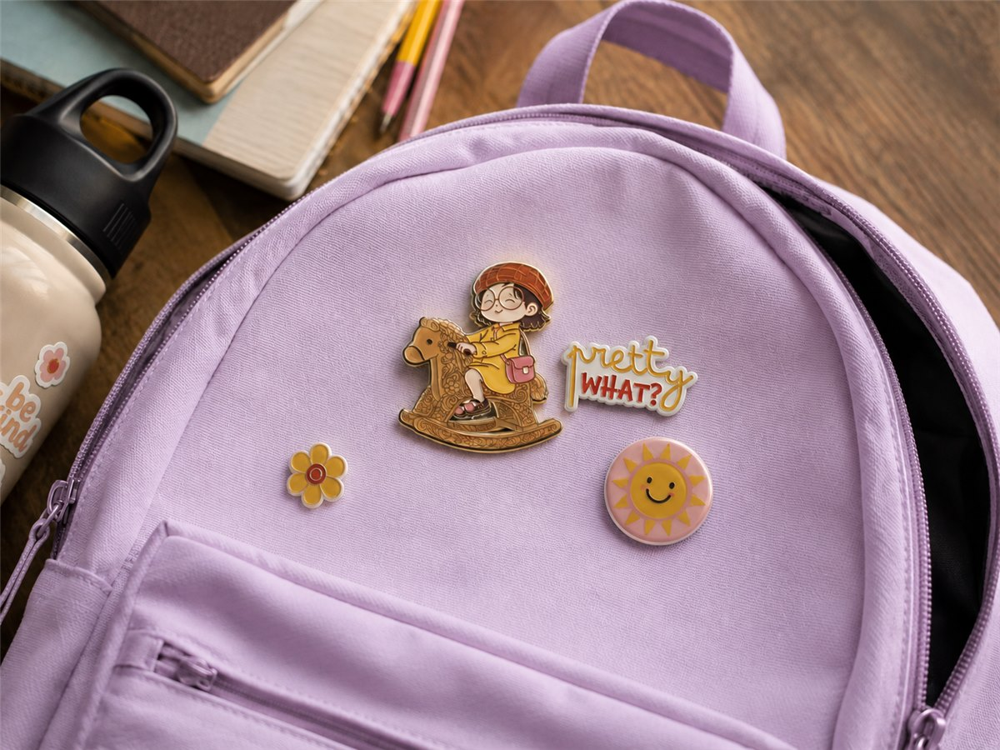
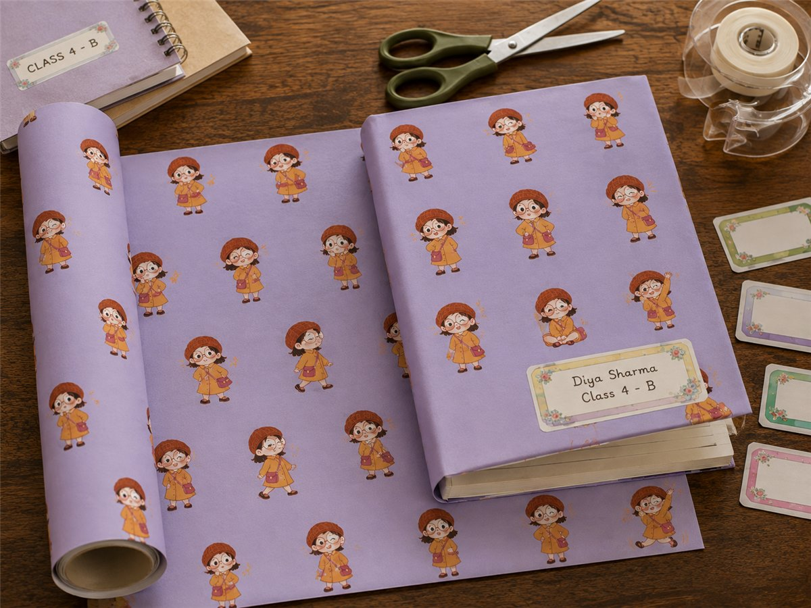
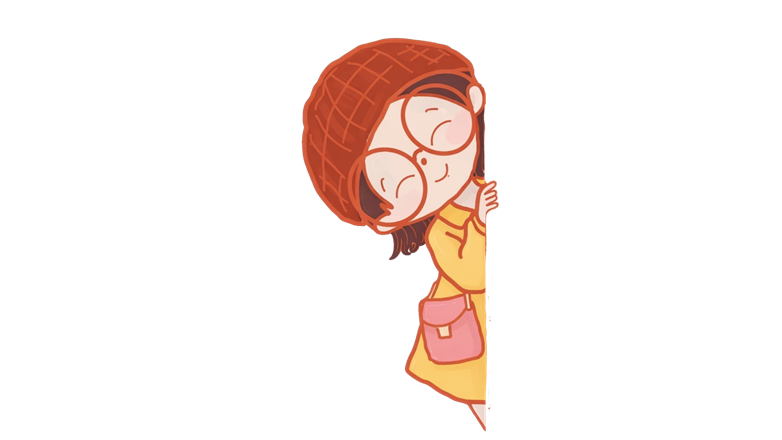
Pretty, What? was my first full design project at design school: the first time I carried something through the whole process, start to finish, in semester 3. Sam came out of it, and she stayed. You might recognise her from the cover of my portfolio. She lives there because she is, in many ways, the clearest expression of what I believe design can do: give a voice to someone who needs one.